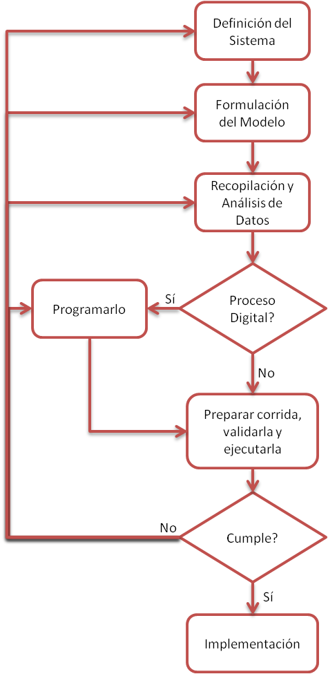

Introducción
Con el advenimiento de la computadora, una de las herramientas más importante para analizar el diseño y operación de sistemas o procesos complejos es la simulación.
Aunque la construcción de modelos arranca desde el Renacimiento, el uso moderno de la palabra simulación data de 1940, cuando los científicos Von Neuman y Ulam que trabajaban en el proyecto Monte Carlo, durante la Segunda Guerra Mundial, resolvieron problemas de reacciones nucleares cuya solución experimental sería muy cara y el análisis matemático demasiado complicado. Gracias a la utilización de la computadora en los experimentos de simulación, surgieron incontables aplicaciones y con ello, una cantidad mayor de problemas teóricos y prácticos.
Pero... ¿a qué llamamos simular? Simulación es la técnica que imita el funcionamiento de un sistema del mundo real cuando evoluciona en el tiempo. Entonces, un modelo de simulación toma la forma de un conjunto de hipótesis acerca del funcionamiento del sistema, expresado como relaciones matemáticas o lógicas entre los objetos de interés del sistema.
La ventaja principal es que la teoría de la simulación es relativamente directa. En general, los métodos de simulación son más fáciles de aplicar que los analíticos. En tanto que los métodos analíticos necesitan de muchas simplificaciones, los modelos de simulación tienen pocas restricciones como éstas y, por lo tanto, permite una flexibilidad mucho mayor en la representación del sistema real. Una vez formado un modelo, se puede usar en forma repetida para analizar diversas políticas, parámetros o diseños. Sin embargo, las simulaciones no son técnicas de optimización y pueden ser costosas por la contratación de gente y programas especializados para la aplicación de estas técnicas.
Definiciones
Según Schmidt y Taylor (1970), un Sistema es un conjunto de entidades que actúan e interactúan para la realización de un fin lógico. En la práctica esta definición es un poco más flexible ya que la descripción exacta dependerá de los objetivos del estudio de la simulación. Por ejemplo, lo que puede ser un sistema para un estudio particular, puede ser solo un subconjunto del sistema general para otro.
Para salvar esta situación, definimos los distintos estados del sistema. En principio, el estado de un sistema es el conjunto de variables necesarias para describir la condición necesaria del sistema en un momento determinado. De esta forma nos encontramos con sistemas Estáticos (no varían en el tiempo) y Dinámicos (varían en el tiempo).
Entonces, dentro de los llamados Sistemas Dinámicos, a medida que pasa el tiempo, cambia el estado del sistema. Para describir este cambio se necesita un conjunto de variables, llamadas variables de estado. Si las variables cambian en forma continua a través del tiempo se lo denominará “Sistema Continuo” (por ejemplo, un proceso químico en el que el estado del sistema varía en forma continua a través del tiempo), si cambian sólo en puntos discretos o contables en el tiempo será un “Sistema Discreto” (por ejemplo, un banco en el que las variables de estado sólo cambian cuando llega un cliente) y si algunas variables cambian continuamente y otras cambian discretamente el sistema será clasificado como “Sistema Combinado”.
Para estudiar el comportamiento de estos sistemas se utilizan modelos de simulación que podrán ser deterministas o estocásticos. Cuando los valores de las variables de estado son exactos y perfectamente conocidos, decimos que la simulación es determinista. Por otro lado, los fenómenos dinámicos que evolucionan aleatoriamente se denominan procesos estocásticos. La simulación de los procesos estocásticos se llama “simulación probabilística” o “simulación Monte Carlo”. La mayoría de los procesos físico-químicos de la realidad presentan algún grado de aleatoriedad. Y es aquí donde los métodos numéricos presentan su mayor ventaja como método de resolución de problemas.
Habitualmente, para resolver un problema a través de los métodos numéricos, deben hacerse varias “corridas” del sistema. Una “corrida” implica una representación completa del sistema evolucionando durante un período de tiempo. Durante una corrida se va observando el estado de del sistema a intervalos de tiempo que pueden ser fijos o variables. En cada observación se hace un relevamiento de los valores de las variables que interesa determinar y se pasa luego a la próxima observación. Si la corrida fue lo suficientemente larga, pueden extraerse ciertas conclusiones para las condiciones en las que operó el proceso. De esta forma se experimenta sobre el modelo para extraer conclusiones definitivas con respecto al funcionamiento del “mundo real” en estudio o para tomar decisiones que regulen su comportamiento futuro.
Etapas para realizar un estudio de Simulación
Para tener una definición exacta del sistema que se desea simular, es necesario realizar un análisis preliminar del mismo, con el fin de determinar su interacción con otros sistemas, sus restricciones, las variables que interactúan en el mismo y sus interrelaciones, las medidas de efectividad que se van a utilizar para definir y estudiar el sistema y los resultados que se esperan obtener del estudio. Una vez que están definidos con exactitud los resultados que se esperan obtener del estudio, el siguiente paso es definir y formular el modelo a utilizar. En esta etapa es necesario:
- identificar los estados posibles del sistema que pueden ocurrir
- identificar los eventos posibles que cambian el estado del sistema
- contar con un reloj de simulación, localizado en alguna dirección del programa de simulación, que registrará el paso del tiempo (simulado)
- definir un método para generar los distintos tipos de eventos de manera aleatoria
- definir una fórmula para identificar las transiciones de los estados que generan los diferentes tipos de eventos.
Es posible que la facilidad de obtención de algunos datos o la dificultad de conseguir otros, pueda influenciar el desarrollo y formulación del modelo. Por consiguiente, es muy importante que se definan con claridad y exactitud los datos que se van a necesitar para obtener los resultados esperados.
La simulación podrá resolverse utilizando una computadora o en forma manual. Cabe destacar que en la simulación de la mayoría de los casos reales es impensable obtener resultados precisos sin el auxilio de una computadora. Solamente con fines didácticos o para problemas de muy pequeña magnitud y simples se justificaría la resolución manual. Si se utiliza un sistema digital, es recomendable proceder en esta etapa a la construcción de un diagrama de flujo que clarifique la lógica del modelo. Esto facilita la programación y ayuda al modelizador a descubrir posibles errores de lógica en el modelo.
Si la tabla de simulación es manual, se deberá realizar un diseño de una tabla, en donde se represente claramente cómo evolucionan las variables de estado del sistema respecto al tiempo. Una de las principales etapas del estudio de simulación es la validación. A través de esta etapa es posible detallar deficiencias en la formulación del modelo o en los datos alimentados al modelo. Las formas más comunes de validar un modelo son:
- La opinión de expertos sobre los resultados de la simulación
- La exactitud con que se predicen datos históricos
- La exactitud en la predicción del fututo
- La comprobación de falla del modelo de simulación al utilizar datos que hacer fallar al sistema real
- La aceptación y la confianza en el modelo de la persona que hará uso de los resultados que arroje el experimento de simulación
Una vez ejecutada la corrida, se deben interpretar los resultados obtenidos. Si los resultados obtenidos no cumplen con los supuestos establecidos entonces se debe volver a las etapas anteriores y comenzar nuevamente.
El modelo puede utilizarse por única vez para resolver un problema específico, o cotidianamente para operar el sistema. En ambos casos deberá tomarse la precaución de documentar adecuadamente los resultados obtenidos a efectos de poder justificar la toma de decisiones.
A estos procesos se los suele caracterizar como procesos en los cuales “dado el presente (x_t) el futuro (x_(t+Δt)) es independiente del pasado (x_(t-Δtn))”